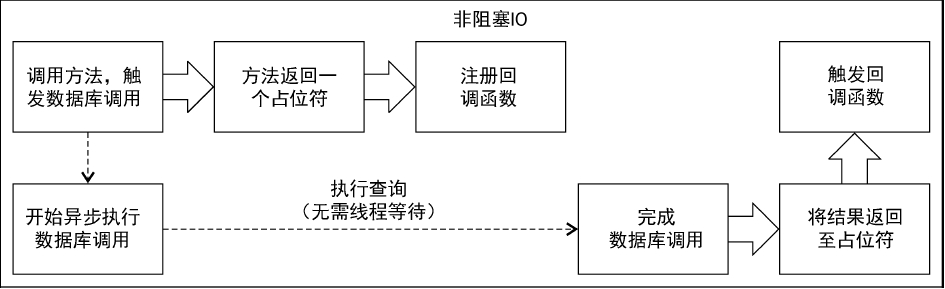
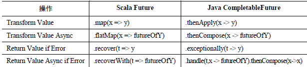
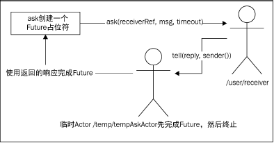
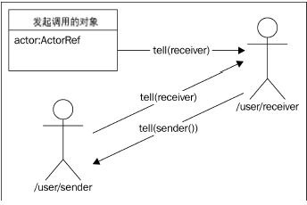

Scala&Akka学习纪要
背景
前一段时间，公司小组内调整，我被安插到一个在线客服的项目下。人不多，就我一个人作为主开发。其主要原因是，项目整体大的需求少数，总体趋于稳定，故而开发很少。
但是，从我接手到目前（2018-8-16），总共也就不到1个半月，前前后后遇到产线事件不下数10起，其中2~3起事件，定位不到问题。
本片发稿日（2018-8-16），白日再次被公司上集领导层点名批评，说这个系统不好用，怎么怎么样。
确实，从我接手看，这个系统很成问题，为什么说很？经常性出问题！
反观自己，确实，对于这套东西本省就很不熟，当初答应接下来，就是因为想挑战挑战。但是从目前看，效果并不明显。
总结开来：遇到这些所谓奇怪的问题，总结开来就是：无从下手排查。导致平凡出现问题后，解决问题的失效，本质性有没有解决问题等等。客户并不满意！
这套在线客服系统，大体用到的技术包含，如下：
- Java
- Scala
- Akka
- SocketIO
- Redis
- Java Web一套
其中，Scala、Akka、Redis在此之前的工作中并没有很好的接触。特别是Scala、Akka根本碰都没碰过，然而在这套系统里面，这俩又是核心骨架。
先从Scala、Akka这两个陌生的东西开始看起！
书籍笔记
Akka入门实战
这本书是翻译的，讲实话，翻译质量不高，当中有不少细节不能接受。比如ActorSystem本来就是Akka框架中一个核心类，非要硬翻译成Actor系统，额。。。这有点未免有点“门外汉”的意思了吧。不过作为入门书籍，基本类介绍的还是非常详细的。英文水平不错的可以直接去阅读英文版书籍吧。
这本书年代还是有点久远，15年，在那前后akka的稳定版还是处在2.3.6版本前后，故而对于2021年的akka版本（2.16.5）来说，可能有部分场景的类，并不能发很好的适配。解释需要参阅官方的API进行调整。
第二章 Actor与并发
书中写的很有意思：如果读者早已熟稔Scala 的Future，Play 的Promise或是Java8的CompletableFuture，那么可以跳过本章。如果曾经使用过Guava 或Spring 的ListenableFuture，可能需要了解本章所介绍API的不同之处。如果从来没有使用过monadic风格的Future，那就需要花点时间学习一下本章了。
对于我来说，还真是一个都不懂。。。
响应式系统设计
源自一个响应式宣言（Reactive Manifesto /ˌmanəˈfestō/，有些地方翻译为反应时宣言，一个意思。），原文在这里，这里面提到了四个准则：
灵敏性
应用程序应该尽可能快地对请求做出响应。
伸缩性
应用程序应该能够根据不同的工作负载进行伸缩扩展（尤其是通过增加计算资源来\进行扩展）。为了提供伸缩性，系统应该努力消除瓶颈。
容错性
应用程序应该考虑到错误发生的情况，并且从容地对错误情况做出响应。
事件驱动/消息驱动
使用消息而不直接进行方法调用提供了一种帮助我们满足另外3 个响应式准则的方法。消息驱动的系统着重于控制何时、何地以及如何对请求做出响应，允许做出响应的组件进行路由以及负载均。
剖析Actor
书中提到：Java 和Scala 的API 差别很大，因此需要分别介绍。
Java Actor API
先看代码：
1 | public class JavaPongActor extends AbstractActor { |
在这个示例中，有几个关键性的点：
- AbstractActor：首先，我们继承了AbstractActor。这是一个Java 8特有的API，利用了Java 8 的匿名函数（lambda）的特性。与之对应的还有一个
UntypedActor这是一个较为古老的API，其内部需要通过原始的if来判断消息类型。 - Receive：receive方法返回的类型是PartialFunction，这个类来自Scala API。在Java 中，并没有提供任何原生方法来构造Scala 的PartialFunction（并不对所有可能输入进行处理的函数），因此Akka 为我们提供了一个抽象的构造方法类ReceiveBuilder，用于生成PartialFunction 作为返回值。
- ReceiveBuilder：先匹配消息，再通过build()方法生成需要返回的PartialFunction。
- Match：
- match(class, function)：描述了对于任何尚未匹配的该类型的示例，应该如何响应。
match(String.class, s -> {if(s.equals("Ping")) respondToPing(s);}) - match(class, predicate, function)：描述了对于predicate 条件函数为真的某特定类型的消息，应该如何响应。
match(String.class, s -> s.equals("Ping"), s -> respondToPing(s)) - matchEquals(object, function)：描述了对于和传入的第一个参数相等的消息，应该如何响应。
matchEquals("Ping", s -> respondToPing(s)) - matchAny(function)：该函数匹配所有尚未匹配的消息。通常来说，最佳实践是返回错误信息，或者至少将错误信息记录到日志，帮助开发过程中的错误调试。
- match(class, function)：描述了对于任何尚未匹配的该类型的示例，应该如何响应。
- 向sender()返回消息：调用了sender()方法后，我们就可以返回所收到的消息的响应了。响应的对象既可能是一个Actor，也可能是来自于Actor 系统外部的请求。第一种情况相当直接：返回的消息会直接发送到该Actor 的收件信箱中。
- tell()：sender()函数会返回一个ActorRef。在上面的例子中，我们调用了sender().tell()。而tell()是最基本的单向消息传输模式。第一个参数是我们想要发送至对方信箱的消息。第二个参数则是希望对方Actor 看到的发送者。具体描述的是：接收到的消息是String时应该做出的响应。由于需要检查接收到的字符串是否为“Ping”，因此需要进行判断，然后描述响应行为：通过tell()方法向sender()返回一条消息。我们返回的消息是字符串“Pong”。Java 的tell方法要求提供消息发送者的身份：这里使用ActorRef.noSender()表示没有返回地址。
- 返回
akka.actor.Status.Failure：为了向发送方报告错误信息，需要向其发送一条消息。如果Actor 中抛出了异常，就会通知对其进行监督的Actor。不过无论如何，如果想要报告错误消息，需要将错误发送给发送方。如果发送方使用Future 来接收响应，那么返回错误消息会导致Future的结果为失败。Scala Actor API
贴代码：首先写法上，确实要少了不少东西：1
2
3
4
5
6
7class ScalaPongActor extends Actor {
override def receive: Receive = {
case "Ping" => sender() ! "Pong"
case _ =>
sender() ! Status.Failure(new Exception("unknown message"))
}
} - Actor：要定义一个Actor，首先要继承Actor 基类。Actor基类是基本的Scala ActorAPI，非常简单，并且符合Scala语言的特性。
- Receive：在Actor 中重写基类的receive 方法。并且返回一个PartialFunction。要注意的是，receive 方法的返回类型是Receive。Receive 只不过是定义的一种类型，表示
scala.PartialFunction[scala.Any, scala.Unit](注：有关scala中相关 偏函数的介绍，可以参考引用1，更多需要查阅相关专业书籍进行更深入的探索)。如果读者不是非常熟悉ScalaAPI 中的PartialFunction，也不必担心，只需要构造一些模式匹配的case 语句，每个语句都返回Unit，并且知道这些语句并不一定要覆盖所有的可能情况即可。 - 向sender()返回消息：在示例Actor 代码中，我们接着通过sender()方法获取了发送者的ActorRef。我们可以向该ActorRef 发送消息，对发送者做出响应。在这个例子中，返回了“Pong”。
- tell 方法（!）：我们使用tell方法向发送方发送响应消息。在Scala中，通过“！”来调用tell 方法。如果读者看了Java的部分，那么会注意到在Java API 的tell方法中必须指定消息的发送者，不过在Scala中，消息发送者是隐式传入的，因此我们不需要再显式传入消息发送者的引用。在tell 方法“！”的方法签名中，有一个隐式的ActorRef参数。如果在Actor外部调用tell 方法的话，该参数的默认值会设为noSender。下面就是该方法的签名：
def !(message: Any)(implicit sender: ActorRef = Actor.noSender): Unit - Actor 中有一个隐式的变量self，Actor 通过self 得到消息发送者的值。因此Actor中tell 方法的消息发送者永远是self。
Actor的创建
通过使用基于消息的方法，我们可以相当完整地将Actor的实例封装起来。如果只通过消息进行相互通信的话，那么永远都不会需要获取Actor 的实例。我们只需要一种机制来支持向Actor发送消息并接收响应。
在Akka中，这个指向Actor实例的引用叫做ActorRef。ActorRef是一个无类型的引用，将其指向的Actor 封装起来，提供了更高层的抽象，并且给用户提供了一种与Actor进行通信的机制。上文已经介绍过，ActorSystem就是包含所有Actor 的地方。有一点可能相当明显：我们也正是在ActorSystem中创建新的Actor并获取指向Actor的引用。actorOf方法会生成一个新的Actor，并返回指向该Actor的引用。
例如：
在java中：
1 | ActorRef actor = actorSystem.actorOf(Props.create(JavaPongActor.class)); |
在sacala中：
1 | val actor: ActorRef = actorSystem.actorOf(Props(classOf[ScalaPongActor])) |
注意：这里我们实际上并没有新建Actor，例如，我们没有调用 actorOf(new PongActor)。
Props
为了保证能够将Actor 的实例封装起来，不让其被外部直接访问，我们将所有构造函数的参数传给一个Props的实例。Props 允许我们传入Actor 的类型以及一个变长的参数列表。
例如：
1 | Props.create(PongActor.class, arg1, arg2, argn); |
1 | Props(classOf[PongActor], arg1, arg2, argn) |
如果Actor 的构造函数有参数，那么推荐的做法是通过一个工厂方法来创建Props。假如我们不希望Pong Actor 返回“Pong”，而是希望其返回另一条消息，那么可能就会需要这样的构造参数。
1 | public static Props props(String response) { |
1 | object ScalaPongActor { |
然后就可以使用Props 的工厂方法来创建Actor：
1 | ActorRef actor = actorSystem.actorOf(JavaPongActor.props("PongFoo")); |
1 | val actor: ActorRef = actorSystem.actorOf(ScalaPongActor props"PongFoo") |
actorOf创建一个Actor，并返回指向该Actor的引用ActorRef。除此之外，还有另一种方法可以获取指向Actor的引用： actorSelection。
为了理解actorSelection，我们需要先来看一下Actor的路径。每个Actor在创建时都会有一个路径，我们可以通过ActorRef.path 来查看该路径。该路径看上去如下所示：
akka://default/user/BruceWillis
该路径是一个URI，它甚至可以指向使用akka.tcp协议的远程Actor。
akka.tcp://my-sys@remotehost:5678/user/CharlieChaplin
要注意的是，路径的前缀说明使用的协议是akka.tcp，并且指定了远程ActorSystem的主机名和端口号。如果知道Actor的路径，就可以使用actorSelection来获取指向该Actor引用的ActorSelection（无论该Actor 在本地还是远程）。
ActorSelection selection = system.actorSelection(“akka.tcp://actorSystem@host.jason-goodwin.com:5678/user/KeanuReeves”);
Promise、Future和事件驱动的编程模型
阻塞与事件驱动API
要转而使用事件驱动的模型，我们需要在代码中用不同的方法来表示结果。我们需要用一个占位符来表示最终将会返回的结果：Future。然后注册事件完成时应该进行的操作：打印结果。我们注册的代码会在Future占位符的值真正返回可用时被调用执行。“事件驱动”这个术语正是描述了这种方法：在发生某些特定事件时，就执行某些对应的代码。
1 | // java版本 |
1 | // scala版本 |
注意：从线程的角度来看，代码首先会调用方法，然后进入该方法内部，接着几乎立即返回一个Future/CompletableFuture。返回的这个结果只是一个占位符，真正的值在未来某个时刻最终会返回到这个占位符内。
需要理解的是：该方法会立即返回，而数据库调用及结果的生成是在另一个线程上执行的。ExecutionContext 表示了执行这些操作的线程，我们将在本书后面的章节中对此进行介绍。（在Akka 中，可以看到ActorSystem 中有一个dispatcher，就是ExecutionContext 的一种实现。）
方法返回Future之后，我们只得到了一个承诺，表示真正的值最终会返回到Future中。我们并不希望发起调用的线程等待返回结果，而是希望其在真正的结果返回后再执行特定的操作（打印到控制台）。在一个事件驱动的系统中，需要做的就是描述某个事件发生时需要执行的代码。在Actor中，描述接收到某个消息时进行的操作。同样地，在Future中，我们描述Future 的值真正可用时进行的操作。在Java 8中，使用thenRun来注册事件成功完成时需要执行的代码；而在Scala中，使用onComplete。

打印语句并不会运行在进行事件注册的线程上。它会运行在另一个线程上，该线程信息由ExecutionContext 维护。Future 永远是通过Execution Context来创建的，因此我们可以选择在哪里运行Future 中真正需要执行的代码。
在书中提到了，如果你对Java8的Lambda表达式不是很清楚，可以参考oracle官方的教程，来学习一下：Java SE 8: Lambda Quick Start
使用Future进行响应的Actor
Java示例
所有返回Future的异步方法返回的所有返回Future 的异步方法返回的都是Scala的scala.concurrent.Future
创建Actor
首先创建一个ActorSystem，然后通过actorOf在刚创建的Actor系统中创建一个Actor，
1 | ActorSystem system = ActorSystem.create(); |
现在向Actor询问其对于某个消息的响应：
1 | final Future sFuture = ask(actorRef, "Ping", 1000); |
这一做法相当直接，我们调用ask方法，传入以下参数：
- 消息发送至的Actor 引用；
- 想要发送给Actor 的消息；
- Future的超时参数：等待结果多久以后就认为询问失败。
ask会返回一个Scala Future，作为响应的占位符。在Actor的代码中，Actor会向sender()发送回一条消息，这条消息就是在ask 返回的Scala Future中将接收到的响应。
虽然我们无法在Java 8中使用Scala Future，但是可以通过之前导入的库将其转换为CompletableFuture：首先使用1
2final CompletionStage<String> cs = toJava(sFuture);
final CompletableFuture<String> jFuture = (CompletableFuture<String>) cs;scala.compat.java8.FutureConverters.toJava对Scala Future 进行转换，该方法会返回一个CompletionStage。CompletionStage是CompletableFuture 实现的接口，而且这是一个只读的接口。为了调用get 方法，我们将结果的类型转换为CompletableFuture。在测试用例外部，我们并不需要进行该转换。
要注意的是， 我们在Future内存放的数据类型是String，而Actor 是无类型的，会返回Object，因此读者可能会觉得这种无限制的类型转换有问题。当然，在ActorSystem外部与Actor 进行通信的时候需要在这方面多加小心。
Scala示例
理解Future和Promise
Future隐式地处理了两种情况：失败与延迟。要了解如何把阻塞式的IO转为非阻塞式IO，需要学习 一些不同的表示失败处理和延时处理的抽象概念。
Future-在类型中表达失败与延迟
像ask模式这样的异步API会返回一个占位符，类似前面提到的Future类型。
准备一个简单的Java示例：
1 | /** |
Scala示例：
1 | def askPong(message: String): Future[String] = (pongActor ? message).mapTo[String] |
剖析Future
Future[T]/CompletableFuture
成功情况的处理
就像上面的例子中那样，在Java 8中，可以使用thenAccept来操作返回结果。
1 | askPong("Ping").thenAccept(x -> System.out.println("replied with: " + x)); |
而在Scala中，可以使用onSuccess：
1 | (pongActor ? "Ping").onSuccess(){ |
失败情况的处理
失败情况是有可能发生的，而我们也需要去处理这些失败情况。所有的失败情况最终都会由一个Throwable 来表示。和成功的情况类似，有许多方法可以帮助我们来处理失败情况，甚至是从失败中恢复。
在失败情况下执行代码
很多时候，我们都想要在失败情况下做些什么。最基本的就是在失败情况下向日志中打印一些信息。在Scala中，有一种很简单的方法支持这种需求：onFailure。这个方法接受一个部分函数作为参数，而这个部分函数接受一个Throwable。
1 | askPong("causeError").onFailure { |
不幸的是，在Java 8中，没有面向用户的用于失败处理的方法，因此我们在这里引入handle()来处理这种情况：
1 | // 这一点是在异常场景中，需要特别注意的 |
对于这个场景的java代码的说明：
handle 接受一个BiFunction 作为参数，该函数会对成功或失败情况进行转换。handle中的函数在成功情况下会提供结果，在失败情况下则会提供Throwable，因此需要检查Throwable 是否存在（结果和Throwable 中只有一个不是null）。如果Throwable 存在，就向日志输出一条语句。由于我们需要在该函数中返回一个值，而失败情况下又不需要对返回值做任何操作，因此直接返回null。
从失败中恢复
很多时候，在发生错误的时候我们仍然想要使用某个结果值。如果想要从错误中恢复的话，可以对该Future 进行转换，使之包含一个成功的结果值。
在Java中，可以使用exceptionally将Throwable 转换为一个可用的值。
1 | CompletionStage<String> cs = askPong("cause error") |
在Scala中，有一个recover方法提供相同的功能。同样地，recover方法也接受一个PartialFunction 作为参数，所以我们可以对异常的类型进行模式匹配：
1 | val f = askPong("causeError").recover { |
异步地从失败中恢复
我们经常需要在发生错误时使用另一个异步方法来恢复，例如下面是两个用例：
- 重试某个失败的操作。
- 没有命中缓存时，需要调用另一个服务的操作。
例如一则Java示例：
1 | askPong("cause error") |
首先，检查exception是否为null。如果为null，就返回包含结果的Future，否则返回重试的Future。接着，调用thenCompose将CompletionStage[CompletionStage[String]]扁平化。
而在Scala中，我们要调用的函数是recoverWith：类似专门用于错误情况的flatMap。
1 | askPong("causeError").recoverWith({ |
组合Future
在Java 中，可以使用CompletableFuture的thenCombine方法，在Future的值可用时访问到这些值：
1 | askPong("Ping") |
在Scala 中，也可以使用for推导式将多个Future组合起来。我们能够像处理任何其他集合一样，解析出两个Future 的结果并对它们进行处理。（要注意的是，这只不过是flatMap的一个“语法糖”）
1 | // 注：在scala中，这种语法非常灵活 |
处理Future List
注： 这个场景，我真没想到什么情况下会使用，暂时先跳过本小节阅读，记得在scala中有这么一种反转的处理方式
1 | val listOfFutures: List[Future[String]] = List("Pong", "Pong", "failed").map(x => askPong(x)) |
Future速查表
注： 在书中提到的本小节涉及的一些Future操作

第三章 传递消息
了解不同的消息模式，也就是在不同Actor 之间传递消息的不同方法。
消息传递
有4种核心的Actor消息模式：tell、ask、forward 和pipe。我们已经了解过tell和ask，不过sender()都不是Actor。在这里，将从Actor之间发送消息的角度来介绍所有关于消息传递的概念。
- Ask：向Actor发送一条消息，返回一个Future。当Actor 返回响应时，会完成Future。不会向消息发送者的邮箱返回任何消息。
- Tell：向Actor发送一条消息。所有发送至sender()的响应都会返回给发送消息的Actor。
- Forward：将接收到的消息再发送给另一个Actor。所有发送至sender()的响应都会返回给原始消息的发送者。
- Pipe：用于将Future的结果返回给sender()或另一个Actor。如果正在使用Ask或是处理一个Future，那么使用Pipe 可以正确地返回Future 的结果。
Ask消息模式
Ask模式会生成一个Future，表示Actor返回的响应。ActorSystem外部的普通对象与Actor进行通信时经常会使用这种模式。
实际运作模式
在调用ask 向Actor 发起请求时，Akka 实际上会在Actor 系统中创建一个临时Actor。接收请求的Actor 在返回响应时使用的sender()引用就是这个临时Actor。当一个Actor接收到ask 请求发来的消息并返回响应时，这个临时Actor 会使用返回的响应来完成Future。如下图所示：

Ask模式要求定义一个超时参数，如果对方没有在超时参数限定的时间内返回这个ask的响应，那么Future就会返回失败。在Java中可以使用akka.util.Timeout来定义：
1 | static import akka.pattern.Patterns.ask; |
在Scala中，则可以使用scala.concurrent.duration来定义Timeout。Scala的duration领域特定语言（Domain Specific Languages，DSL）很强大，允许用户直接使用1 second这样的方式来定义一段时间。在Scala中，ask 的超时参数是隐式传入的，这样有助于简化ask的语义，并且使得ask语句更为简洁：
1 | import scala.concurrent.duration._ |
Tell
Tell是最简单的消息模式，不过要花上一些时间才能够学会这种模式的最佳实践。这也是为什么我们先介绍ask，再介绍tell的原因。Tell 通常被看做是一种“fire and forget”消息传递机制，无需指定发送者。不过通过一些巧妙的方法，也可以使用tell来完成“request/reply”风格的消息传递。如下图所示：

Tell是ActorRef/ActorSelection 类的一个方法。它也可以接受一个响应地址作为参数，接收消息的Actor 中的sender()其实就是这个响应地址。 在Scala 中，默认情况下，sender会被隐式定义为发送消息的Actor。如果没有sender（如在Actor 外部发起请求），那么响应地址不会默认设置为任何邮箱（叫做DeadLetters）。
主要内容
- 《Scala编程》
- 《响应式架构 消息模式Actor实现与ScalaAkka应用集成》